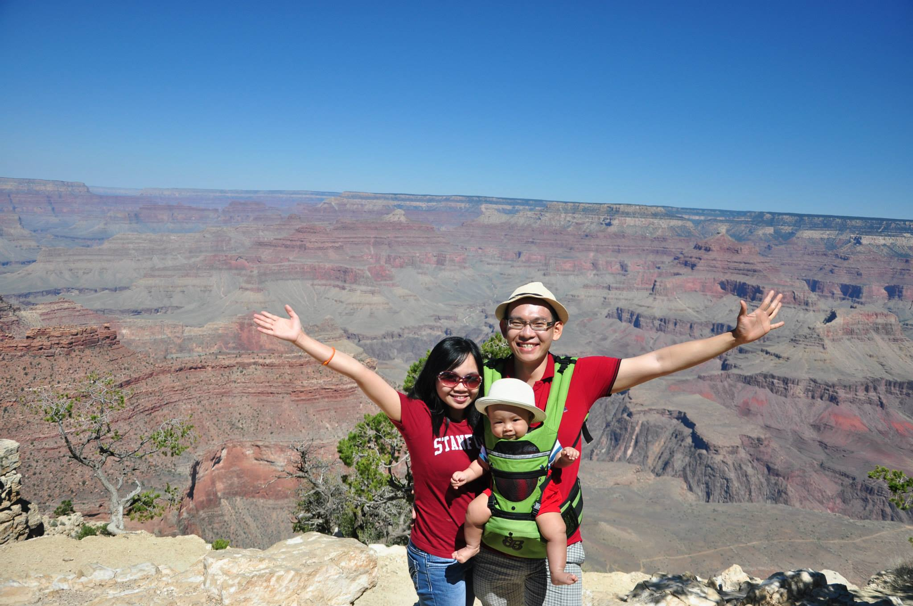

mbaLearnsToCode = MBAsLearnToCode(
name= "Vinh",
mba_school= "Chicago Booth",
mba_class_year= "Full-Time, Class of 2016",
work_experience= ["DATA SCIENTIST / ANALYTICS PRODUCT ARCHITECT
@ Uptake, LLC (uptake.com),
Chicago's leading Industrial Internet-of-Things Analytics start-up",
"REGIONAL ANALYTICS MANAGER
@ CapitaMalls Asia (capitamallasia.com),
top Asian shopping-center company with 100+ malls"],
good_deeds= ["taught Machine Learning to Booth MBA friends",
"worked with Booth profs to launch WORLD's-FIRST-of-Its-Kind
Machine Learning course for MBAs
(ChicagoBoothML.github.io/MachineLearning_Fall2015)",
"co-founded Chicago Booth Analytics Club",
"constructed Data Science Learning Resources Catalog
(tinyurl.com/ChicagoBoothAnalytics-DataSci)",
"coding a dozen Machine Learning / A.I. / Robotics packages
on GitHub, BitBucket & Python Package Index (PyPI)",
"coded apps for wife Sarah,
making her life slightly more complicated,
but undoubtedly better, way way better"]
languages= ["Python", "PythonDjango", "R", "Julia", "Matlab", "Octave", "SQL",
"Ruby", "RubyOnRails", "LaTeX", "Markdown", "YAML", "HTML", "CSS",
"Amazon Web Services (AWS)", "Pascal"]
+ # oh I forgot, plus human languages too, of course:
["Vietnamese", "English", "Singapore English (Singlish)"]
undergrad= "Cambridge University, U.K. (2005-2008)"
)
Eine kleine Nachtgitcommit
Hi, there.
By day, I am Vinh, a dizzily-busy, multitaskingly-distracted, unreasonably thinly-stretched full-time MBA student at Chicago Booth and daddy of a toddling little boss.
Come the quiet of the night, and my nocturnal self mbaLearnsToCode turns on, furiously committing snippets of computer programming code to my treasure troves of precious digital nothings on GitHub, BitBucket and the Python Package Index (PyPI).
I assure you, though, when I'm not committing to GitHub, I do commit a lot to my loved ones, bringing 'em to check out such greate places as this: 
Why and What Do I Code?
I code so that I can:
-
be an active and knowledgeable citizen in the inevitable new world of Machine Learning, Artificial Intelligence and Robotics, and
-
build little life-quality-enhancing apps to help my wife, myself – plus, ahem, friends who are good to us – be less busy doing mind-numbing things such as clearing emails, managing calendars or tracking receipts.
My Coding Repertoire includes:
- Python / Django
- R
- Julia
- Matlab / Octave
- Ruby / Rails
- SQL, and
- a bunch of cloud-computing stuff such as EC2, Elastic Beanstalk, RDS, Route 53 and S3 by Amazon Web Services (my monthly bills help Jeff B. always smile confidently to financial analysts).
What's Cool Here?
-
My Blogs, documenting my exhilaratingly high and strugglingly, frustratingly low moments as a coder in the (non-existent) free time of an MBA-cum-family-guy
-
My Learning Resources to help you if you are starting, or co-travelling, the same MBA-coder path as I am; these include:
-
a jaw-droppingly comprehensive Data Science Learning Resources Catalog compiled by the people, for the people of the young but almightily awesome Chicago Booth Analytics Club, which I co-founded in early 2015; and
-
general app-development tips
-
-
My Tool Room, where I painstakingly catalog useful magic-weapon-like programming packages that coders like you and I can steal for free and summon in our hours of utmost urgent need, when we are having our backs against the wall (or banging our heads against one in frustration)
Enjoy your time on my site!